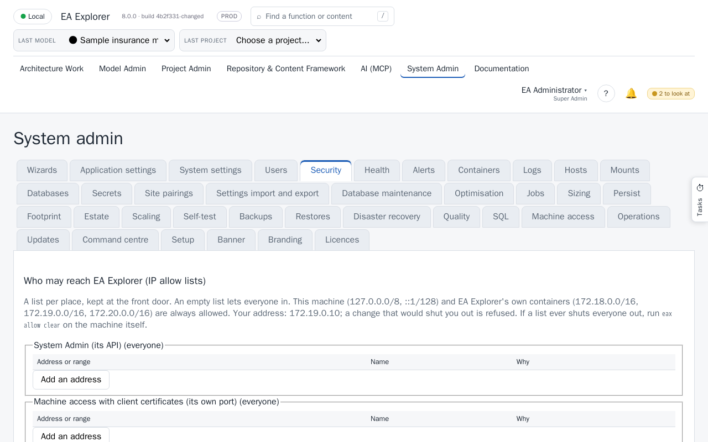

Set who may reach EA Explorer by address
For: System Admin
The network addresses allowed in.

#/admin/securityWhy do this
The allow list limits which addresses can reach the site or its sensitive parts, adding a network layer to sign-in. See Roles and access.
Security in EA Explorer is a set of layers: who can reach it, how they prove who they are, what their roles allow, and secrets no one can read. Each layer is set on the screens, and nothing here ever shows a secret's value.
In TOGAF terms: Outside the method: this protects the repository and who reaches it. See EA Explorer and the TOGAF Standard.
The goal: Only trusted networks reach EA Explorer.
Before you start You need the Super Admin or IT Admin role.
Steps
- Open System Admin › Security.
- Add the addresses or ranges allowed; check that yours is in.
- Save.